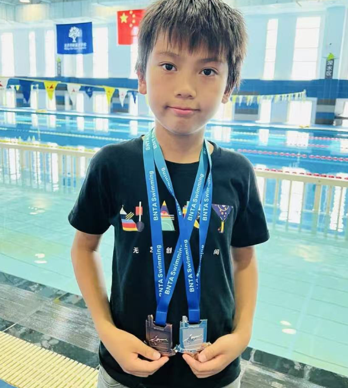

Swimming.
9 years of swimming
50 m / 48 seconds
My swimming journey
I have been swimming for nine years, and it is a sport I love. As a member of Mermaid Swimming Club, I enjoy training, refining my technique and challenging myself in the water.
Competition highlights
I competed in a Beijing swimming competition at the Water Cube, finishing first in my group in both breaststroke and freestyle.
